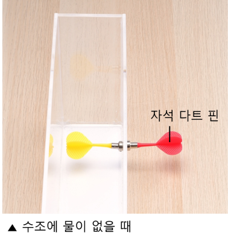

1번 다음은 수조에 물을 넣고 자석 다트 핀을 관찰하는 사진입니다.빈칸 안에 들어갈 알맞은 말을 쓰세요.


수조에 물이 있을 때 두 자석 다트 핀의 위치가 서로 어긋나 보입니다. 이러한 현상은 공기와 물의 경계면에서 빛이 하기 때문에 나타납니다.
수조에 물이 있을 때 두 자석 다트 핀의 위치가 서로 어긋나 보입니다. 이러한 현상은 공기와 물의 경계면에서 빛이 하기 때문에 나타납니다.